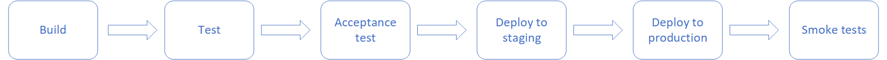
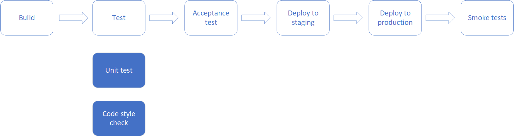

Deployment Pipeline(简称pipeline)是将代码更改应用到生产环境的一系列步骤，是对CI/CD过程的描述，依赖于CI/CD平台（比如Jenkins, Gitlab CI/CD, Buildkite， GOCD等）。通过一条pipeline，代码更改在几分钟或者几十分钟内通过完全自动化的脚本化的流程部署到任何环境。
pipeline的组成
一条pipeline由一系列连续的阶段（stage）组成。一个阶段（stage）会包含一个或者多个步骤（step）。
阶段（stage）
一条pipeline由多个阶段组成，阶段与阶段之间是串行的，比如上一个阶段执行失败，下一个阶段就不会被执行，只有上一个阶段执行通过，下一个阶段才能执行。
比如下图中，如果Test这个阶段执行失败，则Acceptance test以及之后的阶段就不会被执行。

由于阶段之间是串行的，因此合理地划分阶段是很重要的，不合理的阶段划分会导致执行时间变长。
步骤（step）
一个阶段中会包含一个或者多个步骤。
一个步骤代表一件将要执行的具体的事情，比如单元测试。每一个步骤都应当有唯一一个自动化脚本，步骤通过自动化脚本来说明自己要干什么。
步骤与步骤之间是并行的，互不干扰，同时执行。在一个阶段中，只有所有的步骤都成功执行，该阶段才算成功，如果其中有一个步骤执行失败，则该阶段失败。
如下图，在Test这个阶段，包含了两个步骤：unit test 和 code style check。如果unit test执行失败，那么Test这个阶段就失败了，下一个阶段就不会被执行。unit test 和 code style check这两步会同时执行。如果Unit test先于Code style check执行完成，无论成功与否，Test这个阶段都会等待Code style check执行完成。

Build 和 Job
每触发一次Pipeline都是一个build, 可以理解为Pipeline是一个class，而一个build就是pipeline的一个实例。每个build中由一连串的job组成，每个job都是对pipeline中的每个步骤（step）的实现。
为什么需要pipeline
Pipeline 可以让所有人看见应用的构建、部署、测试和发布过程。
更早地发现并解决问题。
可以通过完全自动化的过程在任意的环境上部署和发布应用的任意版本。
一个Pipeline的示例（Buildkite）
1 | steps: |
在Buildkite中，使用wait来分割阶段，使用block进行人工干预。
最佳实践
介绍一些我在项目中实际应用到的最佳实践。
使用Pipeline as Code，不要使用手动配置
CI/CD工具一般都支持Pipeline as Code和手动配置这两种方式去管理一条pipeline。但是不推荐使用手动配置，因为手动配置的过程不容易被追溯，手动配置很容易导致错误出现，我们不应该在任何基础设施上做任何的人工操作，应该Infrastructure as Code。
CI/CD相关的配置，如pipeline、自动化脚本、基础设施等，应当和业务代码放在同一个版本库里。它们具有与业务代码一样的地位，它们的每一次更改都被团队审查。
使用“静态”pipeline，尽量不要使用动态Pipeline
越动态越灵活的pipeline越复杂，越复杂的pipeline可读性就越低。pipeline是自己团队共享的，甚至对其他团队也是可见的。通过CI/CD，我们期待的是让团队成员更加专注于业务，一个复杂的pipeline会给团队成员造成负担。
在我的理解中，pipeline的配置文件就应该是一个简单的YAML文件（如上述示例所示），而不是一个shell脚本，更不是Groovy。
使用自动化脚本，不要使用命令
通常，CI/CD工具都会允许直接在pipeline中调用命令，比如上面的示例中，可以将Test中command后面跟着的脚本更换为一个命令，比如更换成rspec。
1 | steps: |
直接在pipeline中使用命令是一件很危险的事情。CI/CD工具的agent都是运行在我们的基础设施中，那么agent就有权限访问我们的基础设施，用于部署的agent通常是具有很高权限的。如果有人想干坏事，通过修改command就可以做到。但是使用自动化脚本就不会存在这种问题，因为自动化脚本是需要从代码库中读取出来的。
应当禁止在pipeline中直接使用命令。
使用一套部署脚本，不要使用多套部署脚本
staging环境和production环境之间的区别，应当只有配置上的差距，比如其运行在不同的VPC中，或者运行在不同的AWS account上。在上面的示例中，要将应用部署到staging环境和production环境，虽然调用了两个不同的脚本，但是在实际过程中，它们都会调用另外一个auto/deploy的脚本。使用一套部署脚本，可以减少向不同环境部署的差异，更加能够确保我们的测试是可靠的。
使用两条pipeline，不要使用All in one
通常情况下，我们会将部署到生产环境及其之后的步骤拆分到另外的一个pipeline中。在这个过程中，我们也需要拆库，比如我们有一个hello-world的Git Repo，这是主要的代码库，我们也需要创建一个hello-world-deploy的Git Repo，这个库是用来部署到生产环境的。hello-world对应的pipeline最后一步会将Artifacts信息（比如docker image 的 tag）通过Git提交到hello-world-deploy中，然后触发hello-world-deploy对应的部署pipeline。
为什么要这样做？回滚是不可避免的，当某一次部署到生产环境上的应用出现了一些问题不得不回滚时。如果不拆库的话，我们就需要从头开始构建、测试等，这个过程比较漫长的。如果我们拆库了，我们就可以在hello-world-deployrevert这个部署相关的commit，然后提交代码，触发部署流程。
Git是唯一的真实来源。
因此上面的示例中的那种pipeline，并不推荐使用。
Push代码之前，先执行一些简单的测试
在将代码提交到代码库之前，运行一些简单的测试，比如单元测试，代码风格检查，可以减轻CI/CD平台的负担。
一次Build只生成一个Artifact
如果生成多个Artifact（比如docker image），我们无法保证我们测试的就一定是部署到生产上的。
使用自动触发，不要使用手动触发
每一次的代码改动提交到代码时都应该触发pipeline，如果不这么做，我们将无法确保我们一定执行了相关的测试并部署了，这样会给后续的开发带来负担。当然每一次提交都需要去CI/CD平台手动触发pipeline，也会增加开发人员的负担。
代码更改应当尽可能地小
代码更改应当尽可能地小，这样能减少团队审查代码的成本，也能够减低引入bug的风险。
pipeline不过夜
当pipeline执行失败，应当立即停止手上的工作，着手于修复它。应当确保在下班前，pipeline一定是绿的。
资料参考
Continuous integration vs. continuous delivery vs. continuous deployment